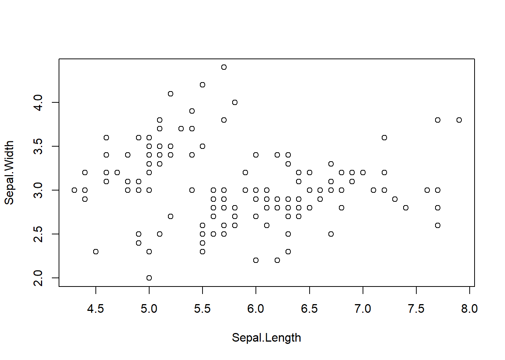

rlang::expr(x |> f())f(x)Named after a famous artist Rene Magritte, who painted the famous ‘ceci n’est pas une pipe’ image, the magrittr / dplyr packages contains a suite of functions using pipes for data manipulation.
I had a friend at university who frequently bought pipe tobacco as apparently it is much cheaper than regular tobacco. Anyway, much like his smoking habit, dplyr can chain things together. In addition to this, it is relatively readable and interpretable in comparison to data.table (or at least to me). That isn’t to say I don’t like data.table, it has its place and advantages with larger data sets but I do not often work with such data sets that the efficiency gain outweighs the trade-off between readability. It is important to balance such things and to consider QC’ers or the possibility of someone taking over a piece of code from you.
The native pipe was introduced in R 4.1.0 and acts similarly to the forward pipe (%>%) in magrittr. Both pipes take in what is on the left-hand side and apply the function on the right-hand side. A number of pipes can be applied sequentially to give a chain of events.
There are some subtle differences between the native and magrittr pipe, including operational efficiency/speed, bracket usage, placeholder syntax, etc. For example, using rlang we can see what is happening under the hood between the two pipes. I.e.,
The R native pipe:
rlang::expr(x |> f())f(x)Magrittr forward pipe:
rlang::expr(x %>% f())x %>% f()We can see that the native pipe is changing the structure (evaluating the expression as syntax) whereas the magrittr pipe is evaluated as a function call and thus is slightly slower.
microbenchmark::microbenchmark("sqrt(4)" = sqrt(4),
"Native" = 4 |> sqrt(),
"Magrittr" = 4 %>% sqrt())Unit: nanoseconds
expr min lq mean median uq max neval
sqrt(4) 0 0 40 0 100 300 100
Native 0 0 102 0 100 7300 100
Magrittr 1600 1700 1943 1700 1800 11900 100There is a wonderful answer here which goes through in more detail some of the differences.
Generally speaking though, if you’re really concerned about speed you wouldn’t use dplyr.
As briefly mentioned, the forward pipe from magrittr behaves similarly to the native pipe in R and allows you to apply potentially many functions in a sequence of code. It will take in values from the LHS and apply functions on the RHS. For example, here we are doing the following:
irisiris %>%
select(Species,Sepal.Length,Petal.Length) %>%
rename_with(~tolower(gsub("\\.","_",.)), everything()) %>%
head() species sepal_length petal_length
1 setosa 5.1 1.4
2 setosa 4.9 1.4
3 setosa 4.7 1.3
4 setosa 4.6 1.5
5 setosa 5.0 1.4
6 setosa 5.4 1.7Typically after applying a series of functions we want to save the result. If you are writing back to the original object a quicker step than doing:
# Create data frame of normally distributed values
df <- data.frame(col=rnorm(100,10,1))
# Remove values greater than 10
df <- df %>% filter(col<10)is to simply use the assignment:
# Create data frame of normally distributed values
df <- data.frame(col=rnorm(100,10,1))
# Remove values greater than 10
df %<>% filter(col<10)The eager pipe evaluates the piped input at each step, you’ll notice when the code below is run with the “lazy” forward pipe, messages appears in a backwards order.
# Set seed for reproducibility
set.seed(42)
# Create main function with forward pipes
main_fun <- function() {
cli::cli_progress_step(msg = "Running main function")
sample(1:100,50,replace=T) %>%
fun1() %>%
fun2() %>%
fun3()
}
# Create sub functions
fun1 <- function(x){cli::cli_progress_step(msg = "Function 1");Sys.sleep(2); x*2}
fun2 <- function(x){cli::cli_progress_step(msg = "Function 2");Sys.sleep(2); x+5}
fun3 <- function(x){cli::cli_progress_step(msg = "Function 3");Sys.sleep(2); mean(x)}
# call main function
main_fun()ℹ Running main functionℹ Function 3ℹ Function 2ℹ Function 1✔ Function 1 [2.1s]ℹ Function 2
✔ Function 2 [4.4s]
ℹ Function 3
✔ Function 3 [6.7s]
ℹ Running main function
✔ Running main function [7s][1] 107.8However, when applying the ‘eager’ pipe we see a more intuitive output which is useful for debugging as messages will appear in the order the functions are applied.
# Set seed for reproducibility
set.seed(42)
# Create main function with eager pipes
main_fun <- function() {
cli::cli_progress_step(msg = "Running main function")
sample(1:100,50,replace=T) %!>%
fun1() %!>%
fun2() %!>%
fun3()
}
# Create sub functions
fun1 <- function(x){cli::cli_progress_step(msg = "Function 1");Sys.sleep(2); x*2}
fun2 <- function(x){cli::cli_progress_step(msg = "Function 2");Sys.sleep(2); x+5}
fun3 <- function(x){cli::cli_progress_step(msg = "Function 3");Sys.sleep(2); mean(x)}
# call main function
main_fun()ℹ Running main functionℹ Function 1✔ Function 1 [2.1s]ℹ Running main function
ℹ Function 2
✔ Function 2 [2.2s]
ℹ Running main function
ℹ Function 3
✔ Function 3 [2.1s]
ℹ Running main function
✔ Running main function [7.1s][1] 107.8A regular forward pipe will update the value of the expression on the LHS from expressions on the RHS and is performed sequentially. A useful, less well-known pipe is the ‘Tee Pipe’. Similar to the Tee Pipe used by your local plumber to create a junction through a T shape, the Tee Pipe takes the input on the LHS and creates a junction to bypass functions which would normally terminate. A popular example is the use of plot with colSums
iris %>%
select(Sepal.Length,Sepal.Width) %>%
plot %>%
colSumsError in colSums(.): 'x' must be an array of at least two dimensions
The above code will produce an error as the plot command does not return anything and therefore colSums will throw an error. Instead we can use a Tee Pipe to pass the data with Sepal.Length and Sepal.Width to both the plot and colSums argument.
flowchart LR
A[iris] --> B[select]
B --> C{T}
C --> D[plot]
C --> E[colSums]
iris %>%
select(Sepal.Length,Sepal.Width) %T>%
plot %>%
colSums
Sepal.Length Sepal.Width
876.5 458.6 This is a fairly trivial example but it does have its uses. By inserting a print command it can be used to help with debugging or we can save an object in the middle of pipes.
It should also be noted that the use of curly brackets will give the same result.
iris %>%
select(Sepal.Length,Sepal.Width) %>%
{plot(.)
colSums(.)}
Sepal.Length Sepal.Width
876.5 458.6 What about the example below?
iris %>%
select(Sepal.Length,Sepal.Width) %T>%
sqrt %>%
colSumsSepal.Length Sepal.Width
876.5 458.6 You might be wondering why this appears to not work, shouldn’t this output the square root and the column sums? It turns out that it works only when one of the operations does not return a value e.g. plot() and print() are used to generate outputs and therefore the function themselves returns NULL.
The zeallot package contains pipes which allow for multiple assignment. The operator allows for the user to assign from LHS to RHS or RHS to LHS. A simple example below shows how I can assign values to x and y.
c(3,4) %->% c(x,y)
c(x,y) %<-% c(3,4)
cat("x = ", x, "\ny = ", y)x = 3
y = 4df1 <-
data.frame(
subject_id = c("S001-0001", "S001-0002", "S001-0003"),
Trt = c("Pembrolizumab", "Pembrolizumab", "nivolumab"),
status = c(1,1,1),
age = c(38,64,24),
time = c(10,38,83)
)
df2 <-
data.frame(
subject_id = c("S002-0001", "S002-0002", "S002-0003"),
Trt = c("atezolizumab ", "Pembrolizumab", "atezolizumab"),
status = c(1,1,1),
age = c(24,67,12),
time = c(34,92,145)
)
# Create data.tables
purrr::map(mget(ls(pattern = '^df\\d+$')), as.data.table) %->%
c(df1, df2)
# See result
list(df1,df2) %>%
lapply(\(x) class(x))[[1]]
[1] "data.table" "data.frame"
[[2]]
[1] "data.table" "data.frame"